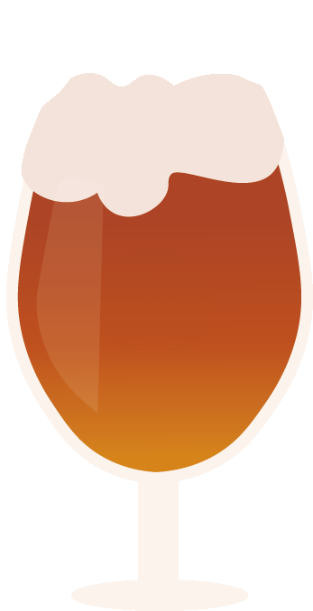

MINDRE PJAT.
MERE ØL.
25 HANER MED SPECIALØL
LIFE IS
TOO SHORT
TO DRINK
BAD BEER


25 HANER
SPECIALØL
KVALITETS-
INGREDIENSER
LOKALE
INGREDIENSER
Hos Mundhæld tilbyder vi
25 haner med specialøl.
Heriblandt en række faste øl,
samt udskiftning for variation
Hos Mundhæld går vi op i,
at det vi serverer, er gode
op
lokale kvalitetsøl brygget
med dansk malt og humle.
Hos Mundhæld støtter vi
lokale bryggerier og hele vores
sortiment kommer fra lokale
bryggerier, heriblandt Aarhus
Bryghus.
OM
MUNDHÆLD
Hej og velkommen til specialølbar Mundhæld's hjemmeside.
Jeg hedder
Mads Buchwald og er ejer af Mundhæld, som jeg
åbnede tilbage i juli 2019.
Udover at jeg er ejer af ølbaren, så
er det også mig som med glæde betjener
dig, når du træder ind
ad Mundhælds døre til hyggelige og hjemlige
omgivelser.
Jeg har en drøm om, at der skal være plads til alle, selvom
man
ikke har den store viden omkring specialøl. Jeg står altid
til rådighed, hvis du
er i tvivl om, hvad du skal have.
Min viden og interesse for specialøl går helt
tilbage til min barndom,
hvilket jeg kan takke min far Niels Buchwald
(brygmester), som står
bag Aarhus Bryghus.

WORRY LESS
AND
DRINK MORE


LIFE IS
BREWTIFUL
FASTE SORTIMENT
KLOSTERBRYG 6,0%
AARHUS BRYGHUS, GOLDEN ALE

Klosterbryg er brygget på pilsnermalt, hvedemalt
og karamelmalt.
Den er krydret med tre forskellige
typer af aromahumle, som gør øllen
blød i smagen
og mindre bitter.
IPA 6,5%
AARHUS BRYGHUS, IPA

Klosterbryg er brygget på pilsnermalt, hvedemalt
og karamelmalt.
Den er krydret med tre forskellige
typer af aromahumle, som gør øllen
blød i smagen
og mindre bitter.
IMPERIAL STOUT 8,0%
AARHUS BRYGHUS, STOUT

Imperial Stouter en mørk, tyk og fed øl. Det er en
kraftig øl med en svag sødme fra rørsukkeret, der
er balanceret med humlen.
DET TYNDE ØL 1,0%
AARHUS BRYGHUS, LAGER

Det Tynde Øl er brygget med lidt røgmalt og er
karamel-gylden i farven. Den er lavet som en
tørstslukker på en varm
sommerdag, og en øl til
dem der skal køre bil.
CELEBRATION 6,5%
AARHUS BRYGHUS, BRITISH IPA
Celebration er brygget på pilsnermalt,
münchenermalt
karamelmalt og hvedemalt, krydret med tre forskellige
humle. Den har en
fløjlsblød, behagelig bitterhed.
NEIPA 6,5%
AARHUS BRYGHUS, NEIPA
Neipa er en ufiltreret New England IPA. Den er
krydret
med den tyske aromahumle Perle og humlet i fire
forskellige
humler. De mange humler skaber en aromatisk
smagsoplevelse med noter af
citrus, grapefrugt, mango
og en vidunderlig bitterhed.
EKSTRA PILSNER 5,0%
AARHUS BRYGHUS, PILSNER

Ekstra Pilsner er brygget på pilsnermalt,
hvedemalt
og karamelmalt. Den er udelukkende humlet med
aromahumle.
Denne øl er mere bitter end de
gængse danske pilsnere.
BLONDIE 5,0%
AARHUS BRYGHUS, PALE ALE

Blondie er en engelsk Pale Ale, krydret med
humleblomster. Den har en frisk mild og blid smag.
EN KOP MONSTER 10%%
AARHUS BRYGHUS, ROM-KAFFE STOUT
En Kop Monster er en mørk øl med tilsætning af
kaffe
fra skråningerne på Mount Kilimanjaro. Efterfølgende er
den
modnet på romfade og derefter brygget på de tyske
humle Polaris. Den har
en kraftig og krydret smag med
en sød eftersmag.

Great selection - always something new to try! Bartenders are super
friendly and will
give you recommendations if you have trouble choosing.